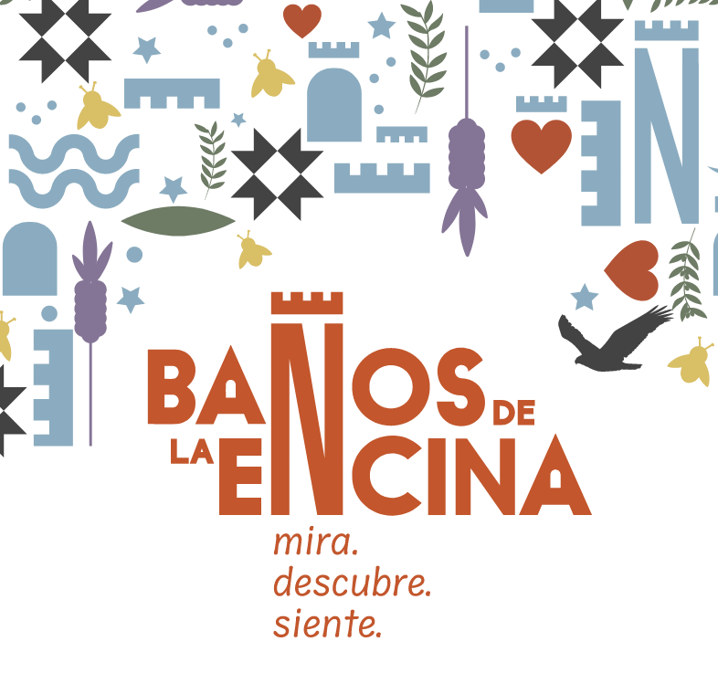
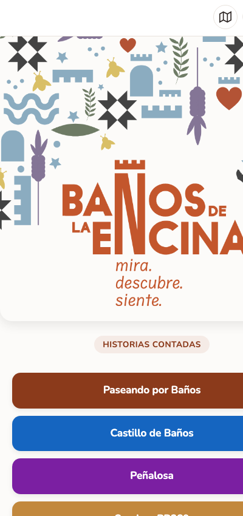
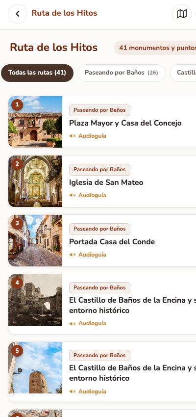
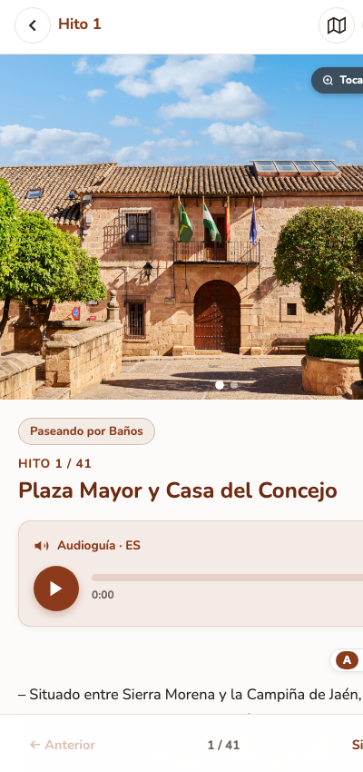
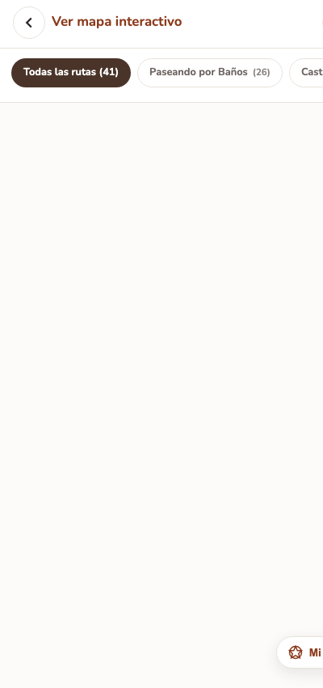
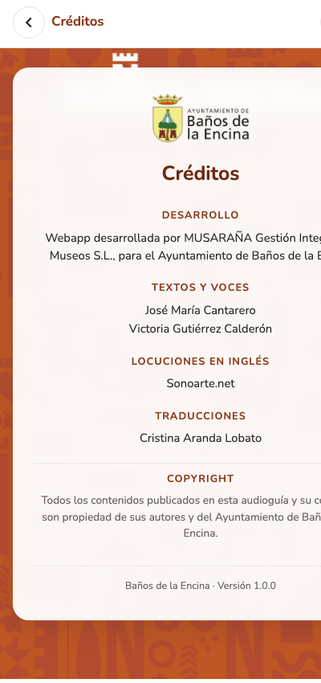
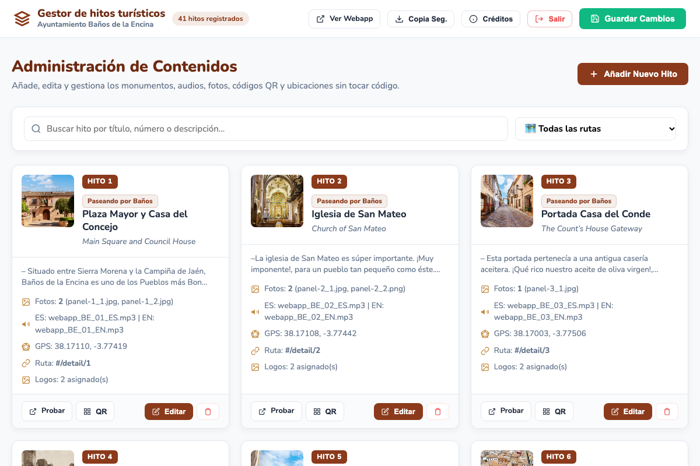
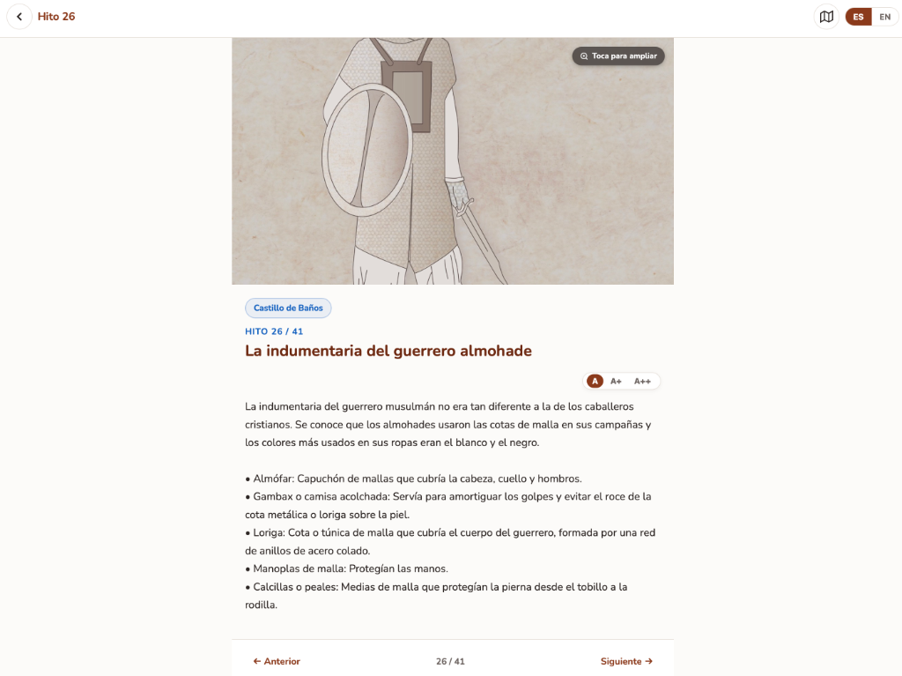

Manual Técnico y de Usuario
WebApp y Audioguía Oficial de Turismo, Patrimonio y Senderos
Versión 1.0.0 (Oficial)
41 Hitos Turísticos
Bilingüe (Español / Inglés)
Sin Descargas (PWA)
Índice de Contenidos
- 1. Resumen Ejecutivo y Ficha Técnica del ProyectoPág. 2
- 2. Credenciales, Seguridad y Accesos al SistemaPág. 3
- 3. Manual de Usuario: WebApp Turística (index.html)Pág. 4
- 4. Pantalla de Créditos y Reconocimientos InstitucionalesPág. 5
- 5. Manual de Administración: Gestor Visual de Monumentos (admin.html)Pág. 6
- 6. Generación de Códigos QR para Imprenta y Placas (qr.php)Pág. 8
- 7. Protocolo de Mantenimiento, Copias de Seguridad y HostingPág. 9
1. Resumen Ejecutivo y Ficha Técnica del Proyecto
El presente proyecto tiene como objetivo dotar al municipio de Baños de la Encina de una herramienta digital moderna, accesible, rápida e interactiva para la divulgación turística y patrimonial de sus monumentos, castillos, ermitas y rutas senderistas.
Esta nueva solución reemplaza de forma definitiva a la antigua aplicación móvil basada en Flutter (que requería pesadas descargas y presentaba problemas de caché en navegadores móviles), sustituyéndola por una Progressive Web App (PWA) de última generación que se ejecuta al instante directamente desde cualquier teléfono inteligente mediante el escaneo de códigos QR colocados en los paneles municipales.
Ficha Técnica de la Solución
| Parámetro |
Descripción y Detalle |
| Tipo de Aplicación |
Web-App interactiva bilingüe (PWA) adaptada a cualquier móvil, tableta u ordenador. |
| Frontend de Visitante |
HTML5 semántico, CSS3 modular (diseño responsive móvil-first), Vanilla JavaScript ES6+. |
| Tiempo de Carga |
Ultra rápido (< 0,8 segundos). Sin frameworks externos pesados que ralenticen la red 4G. |
| Backend y API |
PHP 8.x nativo para la persistencia de datos y subida de archivos multimedia sin FTP. |
| Cartografía y GIS |
Librería Leaflet GIS con cartografía OpenStreetMap / CartoDB y geolocalización GPS real. |
| Sistema de Audioguías |
Reproductor HTML5 Audio nativo con control de progreso táctil y audios MP3 en Español e Inglés. |
| Generación de QR |
Motor vectorial QRCode.js integrado para descargar códigos en Alta Resolución (PNG HD) para imprenta. |
| Contenidos Incluidos |
41 hitos geolocalizados, divididos en 5 rutas temáticas con logotipos institucionales y subvenciones. |
2. Credenciales, Seguridad y Accesos al Sistema
El sistema se compone de dos áreas claramente diferenciadas: la zona pública para turistas y visitantes, y la zona de administración protegida para el personal técnico del Ayuntamiento.
URL WebApp Pública (Turistas)
https://www.banosdelaencina.es/app/
URL Gestor Visual de Monumentos
https://www.banosdelaencina.es/app/admin.html
Contraseña de Administración
23214Banos2026!
Archivo de Configuración de Clave
api.php (Línea 16)
Política de Sesión y Seguridad
- Protección contra accesos no autorizados: Todas las acciones de guardado de datos o subida de imágenes y audios al servidor están verificadas mediante sesiones protegidas en el backend PHP.
- Gestión de sesiones: Cuando el técnico municipal introduce la contraseña en
admin.html, el servidor emite una cookie de sesión cifrada que permite trabajar cómodamente sin tener que reintroducir la clave a cada instante.
- Cierre de sesión seguro: Se dispone de un botón rojo
Salir en la barra superior del gestor. Al pulsarlo, la sesión en el servidor se destruye inmediatamente.
⚠️ Cómo cambiar la contraseña de administración en el futuro
Si en el futuro el Ayuntamiento desea cambiar la clave de acceso al gestor, solo es necesario abrir el archivo
api.php con cualquier editor de texto y modificar la línea 16:
define('ADMIN_PASSWORD', 'TuNuevaContraseña123!');
Una vez guardado y subido ese archivo al hosting, la nueva contraseña entrará en vigor de forma inmediata.
3. Manual de Usuario: WebApp para Visitantes (index.html)
La interfaz para el turista ha sido concebida con criterios de máxima usabilidad, rapidez y accesibilidad para que cualquier persona, independientemente de su edad o conocimientos tecnológicos, pueda consultar la guía en la calle.

1. Portada y selección de Rutas

2. Listado con filtros y buscador

3. Ficha con audioguía y zoom
Funcionalidades Destacadas de la WebApp
-
Selección de Rutas Temáticas: Desde la portada el visitante puede elegir directamente la ruta que desea explorar:
- ● Paseando por Baños (Ruta urbana monumental).
- ● Castillo de Baños (Conjunto del Castillo de Burgalimar).
- ● Peñalosa (Yacimiento arqueológico de la Edad del Bronce).
- ● Sendero PR289 (Ruta de naturaleza y senderismo).
-
Ficha Interactiva de Hito: Al entrar a un hito (escaneando el QR o desde el listado), el usuario dispone de:
- Fotografía principal: Con encuadre específico adaptado a cada monumento y posibilidad de pulsar para abrir el visor ampliado a pantalla completa (Lightbox Zoom).
- Audioguía integrada: Reproducción fluida y accesible con barra de tiempo interactiva.
- Selector de Idioma instantáneo: Botones
ES y EN en la cabecera para cambiar al instante entre español e inglés sin perder la posición del recorrido.
- Barra de Accesibilidad Visual: Botones
A, A+ y A++ que permiten agrandar la tipografía del texto a personas mayores o con visión reducida.
- Enlaces externos a folletos / PDFs: Cuando un hito cuenta con un documento complementario (por ejemplo, el folleto de un sendero o plano), aparece un botón directo para su apertura.
- Logotipos de Subvención Oficial: Zona reservada al pie de la ficha con las marcas reglamentarias de la Junta de Andalucía, Gobierno de España y Fondos Europeos.
Mapa Turístico con Geolocalización GPS en Tiempo Real
Pulsando el icono de mapa en la cabecera, el visitante accede a la cartografía interactiva del término municipal. Los hitos aparecen representados con marcadores identificados por el color oficial de su ruta. Al pulsar el botón «Mi Ubicación», el navegador solicita permiso de GPS y sitúa un punto azul sobre la posición exacta del turista para orientarle paso a paso.

Mapa interactivo con GPS en tiempo real

Pantalla de Créditos oficiales y autoría
4. Pantalla de Créditos y Reconocimientos Institucionales
En cumplimiento de los requerimientos de autoría y transparencia municipal, en la parte inferior de la portada aparece de manera discreta el indicador v1.0.0. Al pulsar sobre él, se abre la pantalla oficial de reconocimientos con el fondo fotográfico municipal (fondo.png), donde se detallan los créditos completos del proyecto:
- Desarrollo: Webapp desarrollada por MUSARAÑA Gestión Integral de Museos S.L., para el Ayuntamiento de Baños de la Encina.
- Textos y voces: José María Cantarero y Victoria Gutiérrez Calderón.
- Locuciones en Inglés: Sonoarte.net.
- Traducciones: Cristina Aranda Lobato.
- Copyright: Propiedad exclusiva de sus autores y del Ayuntamiento de Baños de la Encina.
5. Manual de Administración: Gestor Visual de Monumentos (admin.html)
Para que el Ayuntamiento no dependa de programadores ni de empresas externas para mantener la webapp, se ha creado el Gestor Visual de Monumentos (admin.html). Desde este entorno gráfico es posible dar de alta nuevos hitos, corregir textos, cambiar fotos, reasignar audios o mover coordenadas geográficas.

Vista general del Panel de Control de Hitos (admin.html)
Barra de Herramientas Superior
- Ver Webapp: Abre en una pestaña nueva la aplicación pública para comprobar de inmediato cómo lo ve el turista.
- Copia Seg.: Descarga a tu ordenador un archivo
.json con la copia de seguridad de toda la base de datos municipal.
- Créditos: Abre un formulario modal para modificar los textos de autoría o el número de versión si en el futuro se desea.
- Guardar Cambios: Publica de forma definitiva en el servidor todos los cambios introducidos con un solo clic.
- Salir (Rojo): Cierra la sesión activa de administración de forma inmediata.
Cómo Editar o Crear un Hito Turístico
- En la tarjeta del hito que deseas modificar, pulsa el botón Editar (o pulsa «Añadir Nuevo Hito» en la cabecera).
- Se desplegará el modal editor con los siguientes campos configurables:
- Título y Descripción: En español y en inglés.
- Ruta asignada: Selecciona en qué ruta temática aparecerá clasificado.
- Encuadre / Posición en la ficha (🎯 Novedad):
Permite elegir cómo se encuadra la fotografía en la cabecera cuando el visitante abre el monumento:
⬆️ Arriba (para paneles verticales donde interesa ver el título superior), ⏺️ Centrado (para fachadas y paisajes), ⬇️ Abajo (para suelos o detalles inferiores), o 🔍 Foto completa (muestra la foto entera sin recortes).
- Archivos de Audio: Nombre del archivo MP3 en español y en inglés situado en
assets/audio/.
- Logotipos de Subvención: Asigna los sellos institucionales obligatorios de cada hito.
- Ubicación en el Mapa: Puedes escribir la latitud y longitud numéricamente, o simplemente hacer clic y arrastrar el marcador sobre el mapa interactivo que incluye el propio modal.
- Pulsa «Guardar Hito». Los cambios se aplicarán al instante.
6. Generación de Códigos QR para Imprenta y Placas (qr.php)
Cada hito cuenta con un botón directo «Código QR» en su tarjeta del panel de control. Al pulsarlo, el gestor abre un módulo generador de códigos QR vectoriales de alta definición.

Generador vectorial de Códigos QR con base URL ajustable
Ventajas del Sistema QR Propio:
- Sin suscripciones de pago: Los códigos generados no caducan jamás ni dependen de cuotas mensuales a plataformas privadas.
- Ajuste dinámico de dominio: El campo «Dominio / Dirección web base» permite adaptar el código a cualquier subdominio o carpeta donde esté alojada la app.
- Descarga en Alta Resolución (HD): Al pulsar «Descargar QR para Imprenta» se genera un archivo PNG limpio a gran escala, perfecto para ser vectorizado o enviado directamente a los talleres de señalética, carpintería metálica o serigrafía.
💡 El Redireccionador Inteligente: qr.php
La webapp incluye en su raíz un script llamado
qr.php. Cuando imprimes una placa con la dirección
https://www.banosdelaencina.es/app/qr.php?id=5, el servidor redirige de forma automática al turista al hito 5 (
/#/detail/5). Si en el futuro se amplían hitos o cambia la estructura interna, las placas físicas en la calle seguirán funcionando sin necesidad de reimprimirlas.
7. Protocolo de Mantenimiento, Copias de Seguridad y Hosting
Requisitos del Servidor Web (Hosting)
- Tipo de servidor: Cualquier hosting compartido, VPS o servidor dedicado estándar con soporte para PHP 7.4, 8.0, 8.1, 8.2 o superior (Apache o Nginx).
- Permisos recomendados en el servidor:
- Carpetas: Permisos
755 (especialmente js/, assets/images/ y assets/audio/ para permitir guardado desde el panel).
- Archivos: Permisos
644 (especialmente js/hitos.js y api.php).
Recomendación para Mejorar el Posicionamiento en Google (SEO)
La webapp ya cuenta con todas las etiquetas meta oficiales y el marcado Schema.org institucional. Para que Google sitúe la WebApp oficial en el primer lugar absoluto al buscar «webapp baños de la encina»:
- Colocar un enlace o banner directo en la portada de la web municipal (
bdelaencina.es) que apunte a la WebApp.
- En la ficha de Google Maps de la Oficina de Turismo y del Castillo de Burgalimar, agregar el enlace en el apartado de Sitio Web o Audioguía Oficial.
Documentación oficial entregada por MUSARAÑA Gestión Integral de Museos S.L. al Excmo. Ayuntamiento de Baños de la Encina.
Todos los derechos reservados © 2026.